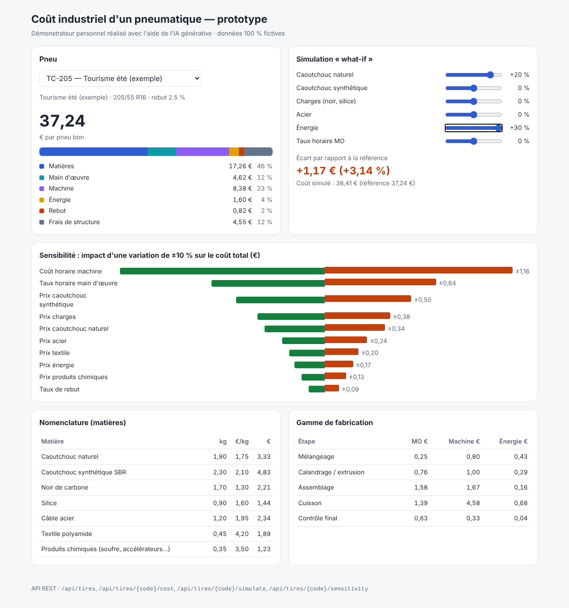

Projet personnel · Java 21 · Spring Boot · développé avec Claude Code
Combien coûte un pneu ?
Pour préparer ma candidature, j'ai appliqué à petite échelle la démarche décrite dans l'offre : user stories, tests, code, puis évaluation de l'IA. Le prototype calcule, simule et analyse le coût industriel d'un pneumatique. Le modèle ci-dessous reprend ses règles de calcul. Toutes les données sont fictives.
TC-205 · tourisme été · 205/55 R16 · rebut 2,5 %
37,24€ / pneu bon
Référence
Rebut = coût direct × r / (1 − r). Frais de structure = 35 % de (main d'œuvre + machine).

Voir le code sur GitHub17 tests automatisés · 9 user stories · API REST · journal d'évaluation de l'IA
Journal de bord
Ce que l'IA a mal fait
L'IA a structuré le projet en une session. Elle a aussi commis des erreurs que les tests n'ont pas vues. Je les ai notées, parce que c'est là qu'on apprend où placer le contrôle humain.
01Données irréalistesLe coût machine dépassait le coût matières. Repéré par un contrôle de vraisemblance des résultats, pas par les tests.
02Inducteur oubliéL'analyse de sensibilité ignorait le coût horaire machine, pourtant le poste le plus sensible.
03Libellés techniques à l'écran« Prix SYNTHETIC_RUBBER » affiché à l'utilisateur. Repéré en revue visuelle.
04Erreur d'outillageUne commande d'arrêt du serveur interrompait sa propre session.
Ce que j'en retiens : l'IA accélère la structure, la valeur humaine se déplace vers la spécification, la vérification et le dialogue avec le métier. Des tests construits sur des exemples calculés à la main rendent l'IA contrôlable.
Parcours
Expérience
Analyste Data / Projet IT · stage
Atos, équipe Supply Chain IT, projet client Euromaster · Clermont-Ferrand
Dashboard Power BI de suivi de la fiabilité des prévisions (Slim4), des données SAP à la restitution
KPI : Forecast Accuracy, biais, MAPE ; comparaison prévu / réalisé sur la France, l'Italie et la Suisse
Interface entre équipes IT, Supply Chain et métier ; détection de problèmes de qualité des données
Business Analysis, SI, BI, PLM, IA et organisations. Cas PLM industriel : entretiens avec bureau d'études, méthodes et production.
BUT Science des Données
IUT d'Avignon, Avignon Université
Statistiques, machine learning, bases de données, big data. Projets NLP, classification, Spark.
Études en Business-Informatique
RANEPA, Moscou. Arrivée en France en 2022 pour poursuivre mes études.
Outils
Compétences
IA générative
Claude CodeClaudeChatGPTRunway
Programmation
PythonSQLRVBAGit
Java : bases acquises en BUT, montée en compétence Spring Boot en cours avec ce prototype.
Data & BI
Power BI / DAXDatabrickspandasscikit-learnSpark
Systèmes d'information
SAP (données)Slim4ARAS PIMPLMNetSuite
Méthodes
User storiesGherkinAS-IS / TO-BEAgileKPI
Langues
Russe · natifFrançais · DELF B2Anglais · pro
Hors du bureau
Limonchello et moi
Je monte depuis l'adolescence : saut d'obstacles en Russie, jusqu'à 1 m, puis dressage en France avec Limonchello, mon cheval de cœur. Un cheval ne se commande pas, il se convainc. On progresse par le travail régulier, la patience et la confiance.
Ce que l'équitation m'a appris et que j'apporte en équipe
PersévérancePatienceConfianceResponsabilitéAdaptabilitéCommunication non verbale
Aussi : ski, danse, astronomie, psychologie, Queen et Michael Jackson.